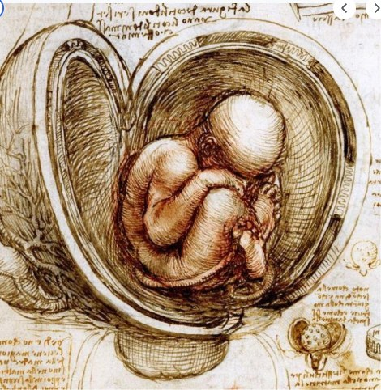

Heads-up: this page is about human anatomy, the way a science book would cover it.
Leonardo planned to write an entire book about the human body: how it begins, how it grows and how every part works. Here is his own outline for how that book would open:
In his own words
This work must begin with the conception of man, and describe the nature of the womb and how the foetus lives in it, up to what stage it resides there, and in what way it quickens into life and feeds. Also its growth and what interval there is between one stage of growth and another. What it is that forces it out from the body of the mother, and for what reasons it sometimes comes out of the mother's womb before the due time.
Then I will describe which are the members, which, after the boy is born, grow more than the others, and determine the proportions of a boy of one year.
He starts before birth. Not with the heart, not with the bones. With how a person gets started at all. Here is how he drew it:

How did he know what the inside of a body looks like? He did not guess. According to the Royal Collection Trust, which looks after many of his anatomy drawings, he dissected about 30 human bodies in two periods of his life, around 1490 and between 1506 and 1513. Around 1509 he was even experimenting with wax injected into a brain, and he studied the valves of the heart.
Turn it around
In his own words
This depicting of mine of the human body will be as clear to you as if you had the natural man before you; and the reason is that if you wish thoroughly to know the parts of man, anatomically, you--or your eye--require to see it from different aspects, considering it from below and from above and from its sides, turning it about and seeking the origin of each member ...
That is a big promise. He wants you to feel like you are holding each part in your own hands, turning it over to see it from every side. It is like taking apart a machine to understand how it runs. For Leonardo, the body was the most complicated machine he had ever seen.
Words to know
- anatomy
- the study of the parts of a body and how they fit together
- foetus
- an unborn baby (also spelled fetus)
- member
- here, a part of the body, like an arm or a leg
- quickens
- begins to show signs of life
Try it
Optional. For after your session with Rocky, on your own time. Ask a grown-up before you use any website.
- Royal Collection Trust: Leonardo's study of anatomy (some drawings show dissected bodies, so preview it first).
- Museum of Science, Boston: Gadget Anatomy. Watch a small machine work, sketch it, and find the simple machines inside. Some of the tools it mentions can cut or pinch, so ask a grown-up.
- Draw your own hand from three sides: the back, the palm and the edge. Which view hides the most?